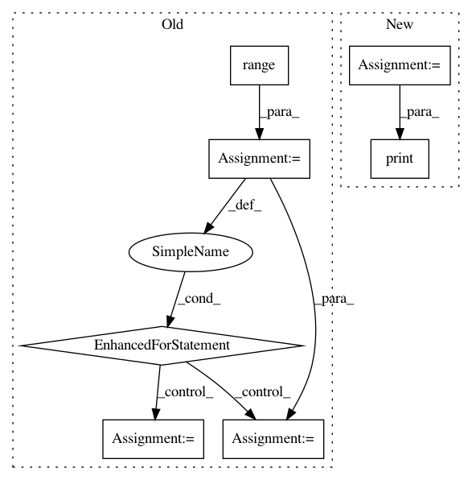

407a5112ab430db6f23fc4317a7400ada797d274,examples/bench.py,,,#,5
Before Change
import mord
import numpy as np
for n_samples in range(40, 200, 20):
X, y = datasets.make_classification(n_samples=n_samples, n_features=10000,
n_classes=5, n_informative=5)
clf1 = linear_model.LogisticRegressionCV(solver="lbfgs",
multi_class="multinomial")
clf2 = grid_search.GridSearchCV(mord.LogisticIT(), {"alpha": np.logspace(
-3, 3, 10)})
cv = cross_validation.StratifiedShuffleSplit(y, test_size=0.3)
print(cross_validation.cross_val_score(clf1, X, y, cv=cv).mean())
print(cross_validation.cross_val_score(clf2, X, y, cv=cv).mean())
print()
After Change
metrics.mean_absolute_error(clf1.predict(X), y))
clf2 = mord.LogisticAT(alpha=1.)
clf2.fit(X, y)
print("Mean Absolute Error of LogisticAT %s" %
metrics.mean_absolute_error(clf2.predict(X), y))
In pattern: SUPERPATTERN
Frequency: 3
Non-data size: 7
Instances
Project Name: fabianp/mord
Commit Name: 407a5112ab430db6f23fc4317a7400ada797d274
Time: 2015-10-21
Author: f@bianp.net
File Name: examples/bench.py
Class Name:
Method Name:
Project Name: HyperGAN/HyperGAN
Commit Name: a178a47269013e94c4756f94a2c9a0c373e04a18
Time: 2021-01-02
Author: mikkel@255bits.com
File Name: examples/next-frame.py
Class Name: VideoFrameSampler
Method Name: seed
Project Name: lingpy/lingpy
Commit Name: 6630157b77a1dea1bb33ab9645aa9ae3f9b50111
Time: 2013-07-25
Author: bambooforest@gmail.com
File Name: lingpy/basic/spreadsheet.py
Class Name: Spreadsheet
Method Name: pprint